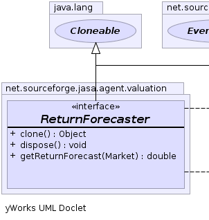
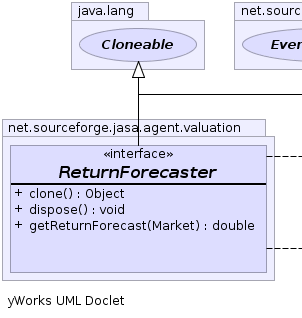

|  |  |
|
|||||||||
| PREV CLASS NEXT CLASS | FRAMES NO FRAMES | ||||||||
| SUMMARY: NESTED | FIELD | CONSTR | METHOD | DETAIL: FIELD | CONSTR | METHOD | ||||||||
public interface ReturnForecaster
|  | |
| Method Summary | |
|---|---|
java.lang.Object |
clone()
|
void |
dispose()
|
double |
getReturnForecast(Market market)
|
| Methods inherited from interface net.sourceforge.jabm.event.EventListener |
|---|
eventOccurred |
| Methods inherited from interface net.sourceforge.jabm.event.EventSubscriber |
|---|
subscribeToEvents |
| Method Detail |
|---|
double getReturnForecast(Market market)
java.lang.Object clone()
throws java.lang.CloneNotSupportedException
java.lang.CloneNotSupportedExceptionvoid dispose()
|
|||||||||
| PREV CLASS NEXT CLASS | FRAMES NO FRAMES | ||||||||
| SUMMARY: NESTED | FIELD | CONSTR | METHOD | DETAIL: FIELD | CONSTR | METHOD | ||||||||